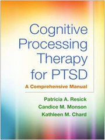

Cognitive Processing Therapy for PTSD: A Comprehensive Manual
Book·Patricia A. Resick, Candice M. Monson, Kathleen M. Chard, 2017·创伤后应激障碍的认知加工疗法：综合手册

A complete manual for cognitive processing therapy, focusing on the beliefs that keep people "stuck" after trauma.
- Author
- Patricia A. Resick, Candice M. Monson, Kathleen M. Chard
- Year
- 2017
- Difficulty
- Advanced
- Kind
- Practice
- Schools
- Trauma Studies and PTSD
- Core theories
- Cognitive Processing Therapy
Editions
- English edition Cognitive Processing Therapy for PTSD: A Comprehensive Manual Patricia A. Resick, Candice M. Monson, Kathleen M. Chard · Guilford Press, first edition · 2017 Open Library ↗